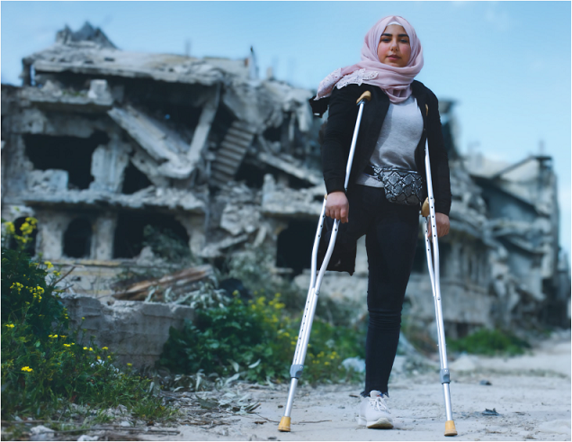
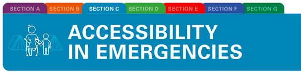

TOOLKIT ON ACCESSIBILITY

Tools to apply universal design across premises and programmes and promote access for all


2
Tools to apply universal design across premises and programmes and promote access for all

TOOLKIT ON ACCESSIBILITY
Tools to apply universal design across premises and programmes and promote access for all
This toolkit was developed by the UNICEF Disability Team, based in the Programme Group Leadership Team at New York Headquarters. It was prepared in close consultation with persons with disabilities, and through consultations and collaboration with accessibility specialists, UNICEF staff and other partners around the world.
The core team at UNICEF included Gopal Mitra (currently serving as Senior Officer at the United Nations Disability Strategy Secretariat, Executive Office of the Secretary- General, United Nations), Megan Tucker and Anna Burlyaeva. The toolkit was developed under the supervision of Rosangela Berman Bieler, Senior Adviser and Chief, Disability Section, UNICEF.
Colleagues from UNICEF country and regional offices and various headquarter divisions contributed substantially to the development of this toolkit. Thanks go to Carlos de la Espriella, Katinka Rosenbom, Ignacio Giménez, Kirstin Lange, Ahmed Ghanem, William Abi Abdallah, Heidy Martinez, Shirin Kiani and Besan AbdelQader.
UNICEF consultants with expertise in disability-inclusion, communication, accessibility and urban planning provided key input into the document, including Renata Zanetti, Daisuke Arao, Jens Aerts and Erika Trabucco, on behalf of Humanity and Inclusion.
3An original draft that substantially informed this toolkit was created by the Global Alliance on Accessible Technologies and Environments (GAATES), led by past president Betty Dion, with Bob Topping, LoriAnn Girvan and Marnie Peters, and the GAATES project team: Abdul Zazai, Vashkar Bhattacharjee, Chuck Letorneau, Mathew Fleet, Anjlee Agarwal, Aqueel Qureshi, Erin O’Herlihy, Aqueel Qureshi, Deepak KC and Janett Jimenez.
Thanks also to conversations and interviews with the Disability-Inclusive and Accessible Urban Development (DIAUD) Group, which included Stig Langvad, Benjamin Dard, Kathy Kline, Lisa Stafford, Mano Karan and Megan Smith during the ninth World Urban Forum in Malaysia, which also informed the toolkit.
© United Nations Children’s Fund (UNICEF) February 2022
Permission is required to reproduce any part of this publication. For more information on usage rights, please contact:
Disability Section, UNICEF
3 United Nations Plaza
New York, NY, 10017, USA
Email: disabilities@unicef.org
In addition to the PDF version, the toolkit is also available in a range of accessible formats: EPUB, Braille-ready file and accessible HTML.
Cover photo: © UNICEF/UNI310492/Al-Droubi
Nour, 16, stands in her war-ravaged and now partially inhabited neighbourhood of Karm Al-Zaitoun in Homs city, Syrian Arab Republic.
Feedback and comments: This toolkit is a living document that will be updated and revised as it is used in the field to support UNICEF’s work on accessibility and inclusion of children and adults with disabilities. UNICEF colleagues and partners are invited to send feedback:
Email: disabilities@unicef.org
Editor and copy editor: Fabienne Stassen, EditOr Proof
Layout and graphic design: Big Yellow Taxi, Inc.
Web designer: Elias Constantopedos
Illustrator: Foteini Korre
Accessible formats: Prashant Ranjan Verma
4Toolkits on accessibility
The toolkit is divided into seven sections and one Toolbox:

SECTION A: ADVOCACY FOR ACCESSIBILITY: suggestions on how to advocate for accessibility and how to address common objections and preconceived ideas

SECTION B: PROGRAMMERELATED BUILDINGS: an overview of accessibility issues in programme-related activities and in managing accessibility activities at the programme level

SECTION C: ACCESSIBILITY IN EMERGENCIES: an overview of how accessibility should be taken into account in emergencies and disaster preparedness

SECTION D: UNICEF AND UNITED NATIONS COMMON PREMISES: support for managing accessibility improvements in UNICEF offices around the world

SECTION E: ACCESSIBILITY ASSESSMENTS: insight on how to conduct accessibility assessments regardless of the specific circumstances

SECTION F: ORGANIZATION OF ACCESSIBLE EVENTS: suggestions on how to organize accessible events

SECTION G: ACCESSIBILITY CHECKLISTS: 17 checklists to use during accessibility assessments

TOOLBOX: a repository of useful tools, documents and examples for accessibility activities, such as terms of reference or samples of assessment reports
5Dr Omar Abdi, UNICEF Deputy Executive Director, Programmes:
UNICEF works across more than 190 countries and territories, promoting the rights and wellbeing of every child in everything we do. UNICEF advocates for and supports governments to create enabling environments and equal opportunities for all children to survive and thrive, including the over 240 million boys and girls with disabilities living in the world today.
Our work on disability inclusion is mandated by the UN Convention on the Rights of the Child (CRC) and the UN Convention on the Rights of Persons with Disabilities (CRPD) and aligned with the UN Disability Inclusion Strategy (UNDIS) and the UNICEF Strategic Plan. With the 2017 Executive Directive on Accessibility in Programme-Related Construction Activities (CF/EXD/2017-004), UNICEF reaffirms its commitment to ensure physical accessibility is a principle for all the infrastructure that is built through our programmes, including in humanitarian action.
This toolkit is a result of extensive consultations with UNICEF employees, partners and persons with disabilities. It’s a set of technical resources that will help our staff to promote and support accessibility and inclusion across our programmes and operations.
We invite UNICEF colleagues and partners to apply this guidance in their work, to ensure that construction related to our programmes, such as school buildings, health clinics, water and sanitation facilities, are free of environmental barriers.
Hannan Sulieman, UNICEF Deputy Executive Director, Management:
UNICEF is committed to promote an accessible and inclusive work environment for every employee and is investing to increase opportunities for persons with disabilities to join our workforce. This Accessibility Toolkit is an important resource to help us deliver on this commitment, respecting and promoting diversity, equity and inclusion in programmes and operations across the organization.
In 2014, a staff survey on accessibility of UNICEF programmes and premises revealed that 84 per cent of offices required awareness-raising materials and technical capacity on accessibility. In a follow-up All-Staff Survey in 2019, only 39 per cent of respondents deemed their office space was physically accessible for persons with disabilities.
To address the growing internal demand for resources to improve our office buildings, we established a Greening and Accessibility Fund, developed guidance to support renovations for environmentally friendly and accessible premises and set up the Environmental Footprint and Accessibility Assessment Tool (EFAAT).
Data as of 2021 shows us that 52 per cent of UNICEF premises meet “level 1”, the minimum organisational requirements for accessibility. But we can do better, and we must do better. UNICEF’s Strategic Plan Indicator E2.5 on Percentage of UNICEF offices that are disability inclusive and accessible, sets a target of 100% by 2025. This is an ambitious target, but for UNICEF’s 100% organizational commitment on disability inclusion, only a target of 100% of accessibility in our premises and operations can be acceptable.
6| Acknowledgements | 2 |
| Toolkits on accessibility | 4 |
| Foreword | 5 |
| Introduction to the toolkit | 7 |
| Structure of the toolkit | 8 |
| Target audience | 10 |
| Frameworks and approaches | 11 |
| Convention on the Rights of Persons with Disabilities | 11 |
| Universal design | 11 |
| The accessibility continuum | 13 |
| Technical accessibility standards | 16 |
| Sustainable Development Goals | 16 |
| New Urban Agenda | 18 |
| United Nations commitment to accessibility – UNDIS | 18 |
| UNICEF commitments to accessible programmes and premises | 19 |
| UNICEF executive directives | 19 |
| SECTION C ACCESSIBILITY IN EMERGENCIES | 20 |
| Accessibility in emergencies | 21 |
| Part 1: Concepts, data and frameworks | 22 |
| Accessibility vs inclusion | 22 |
| Accessibility in emergency contexts | 23 |
| Framework and general principles | 27 |
| Main actors and connections | 29 |
| Part 2: Accessibility recommendations in emergency response | 31 |
| General considerations | 31 |
| Post-disaster needs assessment | 33 |
| Camp-based settings (refugee camps, Protection of Civilian camps, Internally Displaced Person camps, etc.) | 34 |
| 1. Community buildings/services (schools, clinics, community centres, etc.) | 36 |
| 2. Individual emergency shelters (tents) | 37 |
| 3. Individual temporary shelters | 38 |
| 4. Collective shelters | 44 |
| 5. Water points | 45 |
| 6. Toilets and latrines | 46 |
| 7. Distribution sites | 49 |
| 8. Accessible hygiene promotion sessions and materials | 52 |
| Out-of-camp contexts | 53 |
| Part 3: Taking accessibility into account during the preparation phase | 54 |
| 1. Participation | 54 |
| 2. Training | 55 |
| 3. Early warning systems | 55 |
| 4. Community evacuation shelter identification and preparation | 56 |
| 5. Evacuation plan | 56 |
| Reasonable accommodation | 57 |
| Tools and references | 58 |
| Standards and guidelines for accessibility in humanitarian action | 58 |
| Guidelines for accessible SHELTER | 58 |
| Guidelines for accessible WASH interventions | 59 |
| Glossary and abbreviations | 60 |
| Endnotes | 65 |
"The path to inclusion starts with accessibility".
This toolkit was developed so the work of UNICEF programmes can support children like nine-year-old Amal, a girl with a physical disability who lives in Zaatari camp and who can now play with other children because the local playground has been made accessible to all. It can support children like Frinpali, a seven- year-old boy who uses a wheelchair and now receives appropriate education in Burkina Faso because his school has been made accessible. This toolkit has been conceived as an instrument to facilitate the dialogue with partners and the involvement of organizations of persons with disabilities (OPDs) on accessibility-related issues. And it has been developed with UNICEF’s current and future employees with disabilities and other organizations in mind, so that the facilities they work in are made more accessible and inclusive for all.

© UNICEF/UN0251366/HERWIG
Nine-year-old Amal plays on the seesaw in the new inclusive playground in her school in Zaatari refugee camp, Jordan where she is in third grade.
This Toolkit on Accessibility: Tools to apply universal design across premises and programmes and promote access for all was developed to help UNICEF programmes and operations to become more accessible. It facilitates dialogue with partners, including OPDs on accessible construction.

© UNICEF/UNI388930/DEJONGH
Frinpali, a 7 year old boy who is using a wheelchair, and his friend Hassan at the playground of their school in Fada, in eastern Burkina Faso.
The toolkit is divided into seven sections and one Toolbox:
This Accessibility Toolkit offers information on how to build or adapt infrastructure both in UNICEF-supported programmes and in UNICEF premises, for use by all, including persons with disabilities. Its contents can also be applied to non-UNICEF construction processes and facilities as it takes into consideration international standards.
The guidance provided can be used to enhance and promote accessibility when planning and designing the new construction of programme facilities and infrastructure both in development and humanitarian contexts, and when upgrading or adapting existing infrastructure.
To summarize, information can be used at different points in the accessibility journey, such as:
9While this toolkit is primarily for UNICEF employees involved in construction activities, operations focal points or programme colleagues in charge of construction, it can also be useful for UNICEF partners, other United Nations agencies, OPDs, non-governmental organizations, local authorities and other stakeholders.
This toolkit contributes to the implementation of the United Nations Disability Inclusion Strategy and helps to achieve and exceed most of the strategy’s indicators: lack of physical accessibility, specifically recognized as one of the barriers to inclusion in Indicator 6 on Accessibility, 6.1 on Accessibility of conferences and events, Indicator 7 on Reasonable accommodation and Indicator 5 on Consultation with persons with disabilities. The toolkit helps to report on United Nations Country Team scorecards and to build the capacity of implementing partners on accessibility.

© UNICEF/UN0427130/DEJONGH
Bilal Mohammed, 12, signs during his class in the Inclusive Education Program in Mora, in the Far North of Cameroon. He is in class 5 and his dream is to become a photographer.
Convention on the Rights of Persons with Disabilities
The Convention on the Rights of Persons with Disabilities (CRPD) 1 is an international human rights treaty of the United Nations intended to protect the rights and dignity of persons with disabilities. It was adopted on 13 December 2006 and describes human rights frameworks linked to accessibility, aspects of universal design, reasonable accommodation and international standards for accessibility. UNICEF’s existing commitments and policies to promote accessibility are aligned with the CRPD.
The accessibility of spaces and places determines the extent to which everyone – including persons with disabilities, older persons and children – can live, work and learn independently and participate fully and equally in society. Equal access to transportation, media, information and communication technologies, and public services and facilities, such as schools, libraries and town halls, facilitates the participation of persons with disabilities, in both urban and rural communities. Accessibility is also critical in emergency contexts, such as refugee camps, to ensure access to humanitarian services and facilities.
As of October 2021,184 countries have ratified the CRPD and, increasingly, countries around the world have adopted standards, codes and laws to mandate accessibility, in line with CRPD requirements.
Accessibility is one of the primary principles of the CRPD, set out in article 3 as a vital precondition for the effective and equal enjoyment of civil, political, economic, social and cultural rights for persons with disabilities, for example to health, education, information and communication. Other CRPD articles related to accessibility are article 9: Accessibility; article 19: Living independently and being included in the community; article 24: Education; and article 30: Participation in cultural life, recreation, leisure and sport.
In the 1980s, the American architect Ron Mace coined the term ‘universal design’, which means good design that benefits everyone. 2 Universal design is defined in the CRPD as “the design of products, environments, programmes and services to be usable by all people, to the greatest possible extent, without needing adaptation or specialized design” (article 2). 3
12Seven principles underpin the concept of universal design, summarized as follows:
The outcome of using universal design is that environments, buildings and products are inclusive of, usable by and accessible to everyone, to the greatest possible extent, including children, adults and older persons with and without disabilities, pregnant women, parents with children or using baby strollers, and people carrying heavy equipment, suitcases, groceries, etc.
The concept of universal design applies to almost every area of life. While this toolkit focuses on the accessibility of infrastructure and spaces, the concept also applies to many other areas, programmes and services, such as mobility (e.g., accessible cars, buses or trains; inclusive bus stations; accessible communication on mobility-related web platforms), communication (e.g., inclusive events, sign language interpretation; meetings or lessons; easy-to-read publications; accessible posters) and information and communication technology (e.g., accessible web services and mobile apps; audiovisual content with captions and transcriptions; accessible files and software).
13"Accessibility is one of the core elements of the United Nations Disability Inclusion Strategy. While it is emphasized in all four pillars, accessibility is included also in specific dedicated Indicator 6".
The accessibility continuum is a concept that describes the experience of children, adults with disabilities and older persons departing from their homes, using pathways, crossing roads and taking transportation to reach, enter and use services and facilities. These facilities can be libraries, public meeting halls, sports fields, health care facilities, courthouses, marketplaces, conference rooms, office buildings, etc. A continuous route means that circulating through it is safe, unrestricted and possible using a wheelchair, a walking frame or a service dog, with no obstacles or barriers blocking the way. Such a route must be continuous because, like in a chain, if one link is broken, the chain is compromised.
Four steps ensure the accessibility continuum: reaching a facility; entering a facility; moving around a facility; and using specific features of a facility. 4 These align with the RECU methodology that stipulates that accessible facilities should be easy to reach, enter, circulate and use. 5
Planning for an accessible environment requires a broad vision of the accessibility continuum perspective. For example, if the route from home to school is accessible for a child who uses crutches but there are stairs at the school entrance and classroom doors are hard to push and pull, the child will have difficulty entering the school or learning and participating in activities with his/her peers.
Similarly, if a UNICEF staff member using a wheelchair has an adjustable desk, an accessible work space with appropriate doorway sizes and accessible toilets, he/she will be able to work on an equal basis with others. However, if he/she is unable to independently access the building because there is no accessible parking space, drop- off zone or kerb (ramp) to get on the sidewalk, the overall accessibility of the workplace is compromised.
At least 10 common pitfalls can be avoided or remedied, often at low or no cost, to achieve an accessibility continuum.
14They include the following:
| Common pitfall | Plan or remedy |
|---|---|
| 1. Doors are too narrow and the doorway cannot be entered by a standard or larger wheelchair | Design wide doors and/or change the latches on the doors to allow larger openings |
| 2. Entrances have steps only | Install a ramp or consider a lifting platform |
| 3. Ramps are installed but they are steep and unsafe | Consider going beyond the standards and applying recommended values for a gentle ramp slope (the less steep the better, even if local regulations allow steeper slopes) |
| 4. Ramps are installed but key safety features are missing, with no landing space at the top or bottom to move/turn in a wheelchair, or without handrails or kerbs | Add appropriate handrails; make sure a flat, wide and sufficiently long square circulation or landing space allows room to safely open a door or create momentum to move up the ramp |
| 5. An accessible typical building plan is used but the specifications have not been tailored to the actual context, so the slope is steeper or the entrance path is dangerously slanted such that a wheelchair could fall sideways or backwards | Always take the actual environment into consideration, even when using a ‘standard‘ building plan; the nature and topography of the area might affect the accessibility of the overall design |
| 6. Accessible toilets exist but the door opens inwards instead of outwards, which takes up needed moving space | Make sure the toilet door opens outwards and that there is enough moving space in and around the bathroom |
| Common pitfall | Plan or remedy |
|---|---|
| 7. Accessible toilets exist but they are used as storage space or kept locked, so they are unusable | Raise awareness of the need for accessible toilets to always be available, without needing to request access or having to move things out of toilets |
| 8. The main building is accessible but the pathways leading to it are inaccessible/unreachable or unsafe, for example, unmaintained or steep, or with stepped paths, slippery tiles or construction in or across the pathway | Remember that persons with disabilities must also be able to reach a building; create safe, continuous step-free paths and engage with urban planning officials and people who are blind to review the implemented designs and solutions |
| 9. The pathway leading to the playground or office is accessible and safe but there is fixed furniture at arrival, so persons using a wheelchair do not have room to use the table or area | Use light furniture that can be moved easily or, where furniture is fixed, make sure that it meets measurements that allow comfortable access and usability, including for persons using a wheelchair or who are blind |
| 10. The building, pathways and toilets are physically accessible for persons using a wheelchair but no clear, large signs indicate orientation, so the main buildings and features are difficult to identify and reach | Use clear, large-font, easy-to-read wayfinding signs with high visual contrast and pictograms to make it easy for people to navigate through venues and spaces without having to ask for assistance |
Other considerations to promote inclusion include:
Welcoming, respectful attitudes – If a school is physically accessible but the teacher has a negative, discriminatory attitude and does not want to teach a child with a disability, unless the teacher’s attitude is changed, the child’s access to education will be limited. Attitudes can be improved through role models, interaction with other teachers and students with disabilities, experiential training or campaigns, and programmes to transform harmful social norms.
16Culturally appropriate technical resources or assistive devices – If a school is physically accessible but a child with mobility impairments does not have a wheelchair to reach it, or if no pedagogical tools and assistive devices have been adapted to support children who are blind (such as Braille devices or screen-reading software), some children may not attend school at all. Some of these gaps can be filled through access to reasonable accommodation.
Many of the technical specifications in this toolkit are based on International Organization for Standardization (ISO) standards, developed by a committee of experts. In particular, ISO 21542:2011 ‘Building construction – Accessibility and usability of the built environment’ applies to construction and the modification of new and existing buildings and is available to UNICEF staff via the Supply Division.
Related ISO standards cover accessible lifts (4190-1), emergencies (22320), assistive devices such as tactile walking surface indicators (23599) and graphical symbols for public information and accessibility (7001). Some of the common global symbols used for accessibility are available in the Toolbox.
For UNICEF programmes, ISO 21542 can be applied to all construction-related activities. While dimensions in the standard are geared primarily towards adults, it also recognizes that people across age levels have different needs, so it incorporates, for example, accessibility in toilets designed for children. In addition, accessibility for children is considered in this toolkit based on other existing guidelines and principles. 6
As part of the Sustainable Development Goal (SDG) framework, 7 accessibility of the built environment is referred to explicitly in the targets and indicators for:

Goal 4 – Ensure inclusive and equitable quality education and promote lifelong learning opportunities for all
Target 4.A – Build and upgrade education facilities that are child, disability and gender sensitive and provide safe, non-violent, inclusive and effective learning environments for all
17Indicator 4.A.1 – Proportion of schools with access to (a) electricity; (b) the internet for pedagogical purposes; (c) computers for pedagogical purposes; (d) adapted infrastructure and materials for students with disabilities; (e) basic drinking water; (f) single-sex basic sanitation facilities; and (g) basic handwashing facilities

© UNICEF/UN0547488/MAWA
Nupur takes a computer course and regularly attends counselling services. She receives UNICEF funded Conditional Cash Transfers under the supervision of the Department of Social Services, Nilkamal Union, Char Fasson, Bhola, Bangladesh.

Goal 11 – Make cities and human settlements inclusive, safe, resilient and sustainable
Target 11.2 – By 2030, provide access to safe, affordable, accessible and sustainable transport systems for all, improving road safety, notably by expanding public transport, with special attention to the needs of those in vulnerable situations, women, children, persons with disabilities and older persons
Target 11.7 – By 2030, provide universal access to safe, inclusive and accessible, green and public spaces, in particular for women and children, older persons and persons with disabilities

In addition, Goal 6 (Ensure availability and sustainable management of water and sanitation for all) supports the principle of inclusion in the following targets:
Target 6.1 – By 2030, achieve universal and equitable access to safe and affordable drinking water for all
Target 6.2 – By 2030, achieve access to adequate and equitable sanitation and hygiene for all, and end open defecation, paying special attention to the needs of women and girls and those in vulnerable situations
18In 2016 during Habitat III, the United Nations Conference on Housing and Sustainable Urban Development, global leaders came together in Ecuador with local governments, mayors and constituency groups to establish the New Urban Agenda. The New Urban Agenda commits governments to promoting:
The New Urban Agenda emphasizes the importance of process and implementation in a “participatory manner”, which considers “innovative, resource-efficient, accessible, context-specific and culturally sensitive sustainable solutions”. 8
In 2018, as a follow-on to the Habitat III conference, the World Urban Forum in Malaysia issued the Kuala Lumpur Declaration, with an explicit paragraph on universal design, committing governments to “adopt accessibility and universal design as core principles into national, subnational and local action plans for implementing the New Urban Agenda through inclusive, accessible and participatory processes and consultations”. 9
During the twelfth Conference of States Parties to the Convention on the Rights of Persons with Disabilities, United Nations Secretary-General António Guterres launched the United Nations Disability Inclusion Strategy (UNDIS).
The policy establishes the highest levels of commitment and a vision for the United Nations system on disability inclusion for the next decade, and aims to create an institutional framework for the implementation of the CRPD and the 2030 Agenda for Sustainable Development, among other international human rights instruments and development and humanitarian commitments.
The accountability framework tracks the implementation of the policy for the entire system. It facilitates the assessment of progress and gaps in the work of the United Nations on mainstreaming disability inclusion with a view to advancing system-wide planning and action, promoting synergies and reducing duplication. The accountability framework comprises two related components: an entity accountability framework and
19a United Nations country team accountability scorecard on disability inclusion. Each component includes a set of common system indicators focused on four core areas: leadership, strategic planning and management; inclusiveness; programming; and organizational culture.
Accessibility is one of the core elements of the UNDIS. While it is emphasized in all four pillars, accessibility is included also in a specific dedicated indicator.
UNICEF executive directives
Two executive directives issued by UNICEF relate to disability and inclusion. The first, CF/EXD/2011-005 on disability, sets out the minimum requirements for the accessibility of UNICEF premises and procedures for employing staff with disabilities. A disability accommodation fund was also established by UNICEF to support staff with disabilities.
The second directive, the Executive Directive on Accessibility in UNICEF’s Programme- Related Construction Activities, was issued in December 2017 (CF/EXD/2017-004) to systematically address issues related to the accessibility of the physical environment in programmes. This directive requires UNICEF to adopt accessibility and universal design in all projects with governments and partners across all programme areas, and applies to all new construction, remodelling, extensions or repairs both in development and humanitarian contexts. As stated in the directive, “Accessibility is an enabler that allows children and adults with disabilities to enjoy their rights and entitlements. It is also a precondition for children and adults with disabilities to live independently and participate fully and equally in society”.
This executive directive supplements the existing requirements for the accessibility of premises in Property and Equipment Policy, Supplement 6 – Guidelines for Premises Management and the UNICEF Greening and Accessibility Fund (GrAF) procedures. The GrAF was established in 2015, generated by a 3 per cent air travel surcharge, with 2 per cent of the fund to be used to finance eco-efficiency projects and 1 per cent to be used for accessibility projects (see also Section D of the toolkit).
20"Accessibility is an enabler that allows children and adults with disabilities to enjoy their rights and entitlements. It is also a precondition for children and adults with disabilities to live independently and participate fully and equally in society".
Accessibility in emergencies
Persons with disabilities are disproportionately affected by war, natural disasters and other crises, during which they are likely to experience discrimination and exclusion, despite the increasing efforts of humanitarian actors to adopt inclusive approaches.
Even though frameworks and guidelines take diversity more and more into consideration, disaster management and humanitarian assistance are often designed to provide standardized solutions to an affected community without sufficient regard for the needs of diverse populations, such as persons with disabilities and older people, among other groups. This gap must be filled to ensure assistance to all, without discrimination and on an equal basis. As a condition for inclusion, accessibility needs to be addressed as a core component of disaster risk management and humanitarian action. 10
SECTION C of this accessibility toolkit provides guidance for UNICEF’s teams and partner organizations on how to ensure that accessibility and disability inclusion are taken into account in emergencies, and not only in development contexts.
Part 1 addresses the overarching aspects of accessibility in emergencies, such as the general principles and frameworks to be followed, the main stakeholders to be involved, data and approaches.
Part 2 focuses on the identification of barriers and the main recommendations for typical humanitarian facilities inside and outside camp settings: shelters; water, sanitation and hygiene (WASH) infrastructure; community buildings; distribution sites; etc. It also provides recommendations pertaining to communication-related accessibility measures, for example during hygiene promotion sessions.
Part 3 provides an overview of how to address accessibility and participation during common activities and phases of humanitarian interventions.
Promoting more inclusive humanitarian action is a complex, multifold and ambitious objective that cannot be achieved without addressing all the general principles listed in article 3 of the Convention on the Rights of Persons with Disabilities (CRPD) and, in particular, non-discrimination, full and effective participation, equality of opportunities and accessibility.
Inclusion in humanitarian action is therefore a larger concept than accessibility. It concerns, for example:
This section does not address the whole topic of inclusion in humanitarian action (and disaster risk reduction) but focuses specifically on how accessibility should be taken into account in all the phases of the programming and in various emergency contexts.
According to the United Nations Office for the Coordination of Humanitarian Affairs (OCHA), in 2021, 235 million people will need humanitarian assistance and protection. This number has risen to 1 in 33 people worldwide – a significant increase from 1 in 45 at the launch of the Global Humanitarian Overview 2020, which at that time was already the highest figure in decades.11 11
"Children with disabilities are among the most marginalized and at-risk people in communities affected by humanitarian emergencies, such as armed conflicts or disasters. They are often excluded from humanitarian assistance and denied opportunities to participate in emergency response, recovery and rebuilding efforts".
Extending World Health Organization (WHO) estimates, 12 approximately 15 per cent of this population lives with some form of disability. They “face higher risks in conflict situations and natural disasters. Research shows that the mortality rate among persons with disabilities tends to be two to four times higher than among the general population, as demonstrated in cases with disabilities are disproportionately more likely to be left behind in emergency responses and to fail to benefit from humanitarian services due to ability range of environmental, physical and social barriers. A recent study has confirmed that three-quarters of persons with disabilities do not have adequate access to basic assistance, such as water, shelter or food, in a crisis situation. Half of the persons with disabilities being surveyed also reported no access to disability-specific services, such as rehabilitation or assistive devices.” 13
A crisis often affects all four areas of accessibility (infrastructure, mobility, communication/information, and information and communications technology – ICT), severely impacting the lives of people with disabilities and their capacity to recover from the emergency:
26In emergencies, it is possible to identify very specific risks related to a worsened lack of accessibility that persons with disabilities may be subject to:
| Emergency | Examples of accessibility-related risks for persons with disabilities |
|---|---|
| Earthquake, flood, tsunami |
|
| Cold wave, storm, cyclone |
|
| Heat wave, draught |
|
| Conflict-related crisis |
|
Similarly, the lack of accessibility hinders the possibility of persons with disabilities to be included in emergency responses and the recovery and reconstruction phases:
The CRPD provides the highest framework for inclusion in situations of risk and humanitarian emergencies in article 11: “States Parties shall take, in accordance with their obligations under international law, including international humanitarian law and international human rights law, all necessary measures to ensure the protection and safety of persons with disabilities in situations of risk, including situations of armed conflict, humanitarian emergencies and the occurrence of natural disasters.”
The CRPD addresses accessibility specifically in article 9, and provides useful definitions in article 2 (universal design and reasonable accommodation).
The Charter on Inclusion of Persons with Disabilities in Humanitarian Action specifically mentions the importance of eliminating barriers and adopting universal design in article 2.4: “[we commit to] (b) Strive to ensure that services and humanitarian assistance are equally available for and accessible to all persons with disabilities; (c) Work towards the elimination of physical, communication, and attitudinal barriers including through systematic provision of information for all in planning, preparedness and response, and strive to ensure the accessibility of services including through universal designin programming, policies and in all post-emergency reconstruction.”
The Sendai Framework for Disaster Risk Reduction 2015–2030 recognizes that “disaster risk reduction practices need to be multi-hazard and multisectoral, inclusive and accessible in order to be efficient and effective” (art. 7), and that “disaster risk
28reduction […] requires empowerment and inclusive, accessible and non discriminatory participation, paying special attention to people disproportionately affected by disasters, especially the poorest. A gender, age, disability and cultural perspective should be integrated in all policies and practices” (art. 19d).
Finally, the Sustainable Development Goals of Agenda 2030specifically address the WASH sector ( SDG 6 : Ensure availability and sustainable management of water and sanitation for all) and the shelter sector ( SDG 11 : Make cities and human settlements inclusive, safe, resilient and sustainable).
29Build back safer
From a technical point of view, when addressing an owner-driven reconstruction or, more generally, when rehabilitating existing buildings after an emergency in low- income contexts, it is good practice to use the 8 Build Back Safer Key Messages to guide the intervention.
These principles, however, do not take disability into account and they need to be adapted and integrated with other considerations in order to create accessible structures. A good reference can be found in the CBM publication Inclusive post- disaster reconstruction: Building back safe and accessible for all.
"[We commit to] (b) Strive to ensure that services and humanitarian assistance are equally available for and accessible to all persons with disabilities; (c) Work towards the elimination of physical, communication, and attitudinal barriers ..."
Resources
Different emergencies require different responses but, no matter the situation, it is imperative to systematically include the needs of persons with disabilities in every aspect of the response, and to make sure that the provided infrastructure, equipment, information materials and techniques are accessible for persons with different disabilities.
Overall recommendations
Post-disaster needs assessment
When assessing the situation after a crisis, it is essential to ensure that the needs of persons with disabilities are taken into account in the response:
Camp settings that do not take into account disability inclusion when they are designed may exacerbate the discrimination of persons with disabilities. Accessibility is of paramount importance among the many inclusion-related issues to be addressed:
| Main barriers for people with disabilities in camp settings | Recommendations |
|---|---|
| Difficulty finding and reaching the camp | If compatible with security procedures, provide accessible orientation panels on the streets approaching the camp; make sure that the main access is visible, wide, free of obstructions |
| Inappropriate topography and location of the camp | When planning a new camp, make sure the main entrance is close and easily reachable from a main road, even during the rainy season; avoid flood-prone or hilly areas |
| Inadequate camp layout | Whenever possible, ensure that the layout of the camp is simple and clear, with main and secondary axes, avoiding dead ends and obstacles like open drainage trenches |
| Unsafe mobility inside the camp | Create pedestrian lanes free of vehicle traffic, or provide barriers to protect all pedestrians and persons using wheelchairs, tricycles, persons who are blind, etc., from vehicles; provide shaded resting areas along pedestrian pathways |
| Inadequate circulation throughout the camp | Ensure circulation spaces are kept clear of rubble, personal belongings, furniture, bicycles, cooking equipment, stoves, hanging clothes lines, and any other element that could become an obstacle or even a threat for persons with disabilities |
| Main barriers for people with disabilities in camp settings | Recommendations |
|---|---|
| Hilly/inaccessible areas | Make sure that camp areas of different heights are connected by accessible slopes; if this is not possible, make sure that essential public facilities are not located in inaccessible areas |
| Registration process when arriving: no accessible forms or dedicated lines | Make sure the registration process is simple, that there is a disability focal point, and that dedicated lines and resting spaces are available for persons with disabilities |
| Insufficient internal orientation system | Provide an accessible wayfinding system throughout the camp and at the main entrance that includes tactile maps, visual symbols or landmarks for each neighbourhood in the settlement; identify different types of services with different colours/patterns, etc. |
| Inadequate safety, security and orientation at night | Provide artificial lighting, possibly powered by photovoltaic cells, at least around water points, latrines and washing areas, to improve safety and accessibility for persons with disabilities at night-time |
| Poor nature and maintenance of circulation routes | Ensure that at least the main circulation spaces are flat, even, not obstructed by rubble, rocks or other items, and that they are made of compact materials (avoid gravel, sand, grass, muddy soil, etc.) |
| Poor location of common services | Ensure that at least the key common services are located on flat ground, along the main and accessible circulation routes, on firm, compact surfaces, with no steps or obstacles |
| Main barriers for people with disabilities in camp settings | Recommendations |
|---|---|
| Lengthy distance to essential services | Make sure that persons with disabilities are located close enough to latrines and water points and other essential services (health care, distribution, classrooms) |
| Lack of integration in the shelter location | Avoid locating persons with disabilities all in the same area, to avoid isolation and stigmatization |
| Obstacles in shelters and other community buildings | Make sure that all infrastructure in the camp is barrier-free for persons with different types of disability |
| Inaccessible latrines and water points | Ensure that water points and at least 10 per cent of latrines and sanitary facilities are accessible to persons with disabilities, clearly signposted and located within 50 metres of individual shelters; in the longer term, 20 per cent of latrines should be accessible and within 30 metres of individual shelters 18 |
| Inaccessible distribution sites and procedures | Make sure that distribution sites, procedures and items are accessible to all (see point 7 below) |
Community buildings in a camp setting, such as schools, health centres, offices, etc., need to follow the same accessibility principles as every other building or urban-like environment. The RECU principles (reach, enter, circulate and use) must be followed to ensure that the chain of movement is complete. In addition, accessibility assessments, conducted in a participatory way involving persons with disabilities, are the main methodology to follow to ensure that accessibility is taken into account.
For recommendations on how to design an accessible building, please refer to the dedicated checklist.
37Standard emergency tents may not be suitable for persons with disabilities, especially people with mobility impairments, who use a wheelchair or who are blind. Some accessibility recommendations are crucial, either when selecting the model of the tent to use or when adapting available models (please also refer to the recommendations for temporary shelters):
38"Community buildings in a camp setting, such as schools, health centres, offices, etc., need to follow the same accessibility principles as every other building or urban- like environment".
For people who have lost, or are unable to return to, their homes, new shelter can be a medium- to long-term solution. A disability inclusive and accessible shelter design is essential to ensure the non-discrimination of persons with disabilities and to allow them to perform all essential daily activities, such as taking care of personal hygiene, cooking, resting, etc.
In humanitarian action, shelters are often built in large quantities, following standard designs to be ready to accommodate new residents. These standard designs should follow the principles of universal design to be appropriate for people with different abilities. At the same time, and in coherence with the Twin Track approach, individual adaptations and improvements over time should be cheap and easy to make, according to the needs of the occupants. The design of shelters should integrate the eight principles of Build Back Safer with accessibility considerations (see Section G , Checklists).
As for any other infrastructure, an inclusive shelter design needs to ensure the accessibility of each step of the RECU chain: reach, enter, circulate and use.
Barriers related to inappropriate SHELTERS
An imperative factor when designing a shelter is to consider internal toilets or external latrines (see Section G, Checklists).
Further details are available in the checklists included in Section G of this toolkit.
| Main barriers for people with disabilities in shelters | Recommendations |
|---|---|
| REACH | |
| Lack of accessible paths to reach the shelter (stairs, mud, gravel, grass), requiring help to reach the shelter, especially for persons using wheelchairs or with mobility impairments | Create pathways that are flat, even, with no holes or obstacles, made in firm and compact materials, large enough for persons using a wheelchair |
| Raised porch or basement with no ramp, requiring help to reach the shelter, especially for persons using wheelchairs or with mobility impairments | Build accessible steps, install handrails and ensure consistent step dimensions and contrasted step noses, and/or create an accessible ramp for persons using a wheelchair |
| Main barriers for people with disabilities in shelters | Recommendations |
|---|---|
| Excessively steep ramp to get to the porch, making it hard to climb and dangerous to descend for persons using a wheelchair | Create a ramp with a gentle slope, not too steep, with handrails on both sides, side kerbs and intermediate landings where needed |
| Irregular steps leading to the raised porch or basement, with the risk of stumbling for persons with low vision or mobility impairments | Adapt the steps so they are all the same height (riser/rise) and width (tread/going) and have no protruding nose |
| Dangerous open drainage trenches around the shelter, with the risk of falling in the trench for persons with low vision or mobility impairments | Cover all open trenches, holes or gaps with firm, even and resistant coverings, without creating steps or thresholds |
| Inaccessible shelter on a raised basement without a balustrade, with the risk of falling off the basement | Provide the raised basement with a balustrade on the open sides |
| ENTER | |
| Inadequately sized entrance door, difficult or impossible to pass through (independently) for persons using a wheelchair | Ensure doors are large enough for persons in a wheelchair to pass through |
| Weighty entrance door that is heavy to pull or push, making it difficult to enter or exit the shelter (causing a security threat in case of an emergency) | Make sure doors are well installed, the hinges are properly mounted and the doors are easy to open and close |
| Main barriers for people with disabilities in shelters | Recommendations |
|---|---|
| Inappropriate entrance door that opens inwards in a narrow space, making it difficult to close the door once inside | If possible, make sure the entrance door opens outwards (also for security reasons); if it must open inwards in a narrow space, try to enlarge the space by adapting the internal configuration, especially if the shelter is inhabited by a person using a wheelchair |
| Inappropriate entrance door with a knob- type handle or one that is too high, making it difficult to grab the handle to open and close the door | Make sure doors have handles at an appropriate height and are easy to use with a closed fist |
| Problematic ramp that ends directly under the entrance door, with no landing, making it difficult or impossible to open the door without help | Make sure ramps always end in a clear, flat and horizontal space, large enough to manoeuvre a wheelchair while opening a door (if any) |
| CIRCULATE | |
| Insufficient manoeuvring space inside the shelter, making it difficult to exit, and causing manoeuvring slowness in case of an emergency, sickness or incontinence | Ensure that accessible shelters have sufficient internal, even circulation spaces to allow movements of persons using a wheelchair in particular |
| Inappropriate door type and handle, making it difficult to close properly (a security issue) and increasing the risk of getting stuck inside | Make sure doors have handles at an appropriate height and are easy to use with a closed fist |
| Narrow corridors or passages cumbered with furniture or objects, making it difficult to move around for persons using a wheelchair or crutches and creating a risk of injury from sharp edges | Sensitize the occupants to keep the corridors clear of obstacles |
| Main barriers for people with disabilities in shelters | Recommendations |
|---|---|
| Problematic steps or thresholds in the corridors, creating a risk of stumbling and falling and making it impossible to reach some rooms for persons using a wheelchair | Avoid creating thresholds in corridors and, if any, make sure they are properly bevelled or that a ramp is put in place |
| USE | |
| Difficult-to-use internal stove or other equipment, making it difficult to cook, operate windows, reach kitchen tools, etc. | Provide persons with disabilities with adapted household tools, or with tools that help to use the existing equipment |
| Uneven internal floor, creating a risk of stumbling and falling; insufficient manoeuvring space for persons using a wheelchair | Ensure that accessible shelters have sufficient internal, even circulation spaces to allow safe and easy movements of persons using a wheelchair in particular |
| Insufficient illumination, creating a risk of panic attacks, making it difficult to identify objects for persons with low vision and creating a risk of injury from sharp surfaces | Make sure shelters have adequate lighting |
| Excessive crowding with too many inhabitants and no moving space or privacy, creating a feeling of claustrophobia | Whenever possible, make sure accessible shelters are provided in different dimensions to accommodate families with different numbers of members |
| Main barriers for people with disabilities in shelters | Recommendations |
|---|---|
| Lack of space, making it difficult to get in and out of a wheelchair or to use crutches, creating a feeling of claustrophobia or a risk of panic attacks | Ensure that accessible shelters have sufficient internal, even circulation spaces to allow movements of persons using a wheelchair in particular |
| Presence of sharp corners, creating a risk of injury for persons with low vision or who are blind | Protect sharp corners, internal poles, columns and other potential hazards with anti-bump covers in contrasted colours |
| Unavailability of a sheltered outdoor area, and windows too high and difficult to open, causing a sense of confinement, depression and panic attacks | Make sure shelters have the appropriate number and type of openings towards the exterior; especially in very warm contexts, if possible, ensure that shelters have a private external space |
| Inaccessible toilets/latrines, making it difficult or impossible to maintain appropriate self-hygiene | Make sure accessible shelters have a private accessible toilet/ latrine or are close to a collective latrine equipped with at least one accessible cubicle |
| Difficult-to-operate light switches, or too high or far from the doors, in the same colour of the wall, making it difficult to identify and to use them | Make sure internal fittings like electric switches and sockets (when relevant) are mounted at an appropriate height and are in a colour that contrasts with the colour of the back wall |
| Lack of adapted tools to prepare food, excessively high surfaces with no space underneath, making it difficult or impossible for persons using a wheelchair to cook | Make sure the design of accessible shelters allows persons with disabilities to perform at least such basic tasks as cooking, eating, sleeping and maintaining personal hygiene |
In community-driven (re)construction activities, the community must be sensitized and trained to identify the needs of persons with disabilities and possible solutions:
In some cases, (re)construction activities can also be performed by persons with disabilities, with simple adaptations to working tools and training methods. For example, wheelbarrows can be modified for use by persons with an amputation, and handles can be added to axes and other tools to make them easier to use, etc.
Source: Dilli, David, Accessibility and Tool Adaptation for Disabled Workers in Post-Conflict and Developing Countries , International Labour Office, Geneva, 1997.
44In some circumstances and for short periods (especially in the case of natural disasters), shelters can be shared by a number of families of up to hundreds of people. Accessibility considerations must be taken into account when identifying or designing the community shelter, and while using it.
Preliminary accessibility measures
|
|
Accessibility measures while using the collective shelter
|
|
Water sources during emergencies are often collective and their lack of accessibility can hinder the possibility of persons with disabilities from reaching and using them.
Barriers related to inappropriate water source designs
| Main barriers for people with disabilities at water points | Recommendations |
|---|---|
| Mud/gravel/sandy soil around the water point, making it difficult or impossible for persons with mobility impairments to reach it | Make sure that the ground around the water pump is firm, compact and stable and/or that an accessible pathway leads to the water point |
| Difficult-to-operate hand pump, with no handle, and insufficient space close to it, making it impossible for some to use the pump | Make sure there is enough manoeuvring space around the pump and that it is easy to operate with a closed fist |
| Problematic height of the water source (water faucet, output of the pump, etc., too high/low), making it difficult to fill/ lift a water container | Make sure the type and position of the water outlet allow a filled container to be lifted easily by persons using a wheelchair or with mobility impairments |
| Lack of accessible water containers (no wheels, small handles, etc.), making it difficult or impossible to transport water | Consider providing different types of water containers to persons with disabilities |
| Inaccessible water source on a raised platform with no ramp, making it difficult or impossible to reach the pump | Ensure that the water pump’s raised aprons are equipped with an accessible ramp |
| Unavailability of seats around the water point, causing fatigue for persons with mobility impairments as they wait | Consider providing seats around the water point |
For recommendations on how to design an accessible water point, please refer to checklist 16 in Section G of this toolkit.
46Being able to access and use a toilet facility independently, without the help of other people, is an essential condition of human dignity, self-confidence and autonomy. Ensuring that a certain number of toilets and latrines 19 are accessible is crucial in emergencies. As is the case for all infrastructure, not only should they be accessible, but it is essential that their access paths be accessible also, to ensure an unbroken chain of movement to and from toilets/latrines.
Barriers related to inappropriate latrine designs
| Main barriers for people with disabilities related to toilets and latrines | Recommendations |
|---|---|
| Uneven access paths, or paths that are too narrow or include obstacles and holes, making it difficult to reach the toilet and creating a risk of stumbling or falling on the way | Create pathways that are flat, even, with no holes or obstacles, made in firm and compact materials, large enough for persons using a wheelchair |
| Excessive distance from a shelter or house, requiring undue physical effort or the need to be accompanied, making it unsafe and difficult to reach them at night | Make sure accessible shelters have a private accessible toilet/latrine close by or are close to a collective latrine equipped with at least one accessible cubicle |
| Lack of signage or of a wayfinding system (for collective toilets), making them difficult to find and causing confusion (related to gender, accessibility) | Consider signposting accessible latrines with directional panels that lead to them, and placing panels on the doors with the international symbol of access |
| Raised basement, making it impossible to enter for persons using a wheelchair | Build accessible steps, install handrails and ensure consistent step dimensions and contrasted step noses, and/or create an accessible ramp for persons using a wheelchair |
| Main barriers for people with disabilities related to toilets and latrines | Recommendations |
|---|---|
| Narrow entrance door, making it impossible or difficult to enter for persons using a wheelchair | Ensure doors are wide enough for persons using a wheelchair to pass through |
| Unsuitable handle or locks, making it difficult to open or properly close the door (for privacy) and increasing the risk of getting stuck inside | Make sure doors have handles at an appropriate height and are easy to use with a closed fist |
| Inappropriate door that opens inwards with insufficient manoeuvring space for persons using a wheelchair, creating a risk of getting stuck inside in case of a fall | Make sure the entrance door opens outwards |
| Overly dark space and poor ventilation, creating a risk of panic attacks and sickness or difficult use | Make sure toilets have the appropriate number and type of openings towards the exterior (operable windows, holes in the wall, etc.) |
| Inadequate internal area with no manoeuvring space, making it necessary for persons using a wheelchair to exit backwards | Ensure that accessible toilets have sufficient internal, even circulation spaces to allow safe and easy movements of persons using a wheelchair in particular |
| Uneven, soft internal floor, creating a risk of stumbling and making it difficult to manoeuvre; slippery and unhealthy floor due to stagnating water | Remove all obstacles hindering persons using a wheelchair; if thresholds exist, make sure they are properly bevelled or that a ramp is put in place |
| Ill-adapted seat or at an unsuitable height; inappropriate squat toilet that cannot be used by persons using a wheelchair or unable to sit on the toilet seat | Make sure accessible toilets have an appropriate seat or, for squat toilets, a toilet chair for persons with mobility impairments |
| Main barriers for people with disabilities related to toilets and latrines | Recommendations |
|---|---|
| Inappropriate or missing horizontal handrails, making it difficult to transfer onto the toilet seat and/or to get up from the seat | Ensure appropriate horizontal, wall- mounted or self-standing handles are provided on the sides of the toilet seat |
| Absence of vertical handrails, creating a risk of slipping on the floor or falling in case of loss of balance | Consider adding a vertical handrail close to the sink and/or the toilet seat |
For recommendations on how to design an accessible toilet, please refer to the dedicated Checklist.

NFI distribution sites can be chaotic and thus exclude persons with disabilities. The sites’ location and organization are important, but the distribution of items and kits that are easy to use by everyone is equally important.
Accessibility considerations concerning DISTRIBUTION
| Barriers for people with disabilities related to distribution | Recommendations |
|---|---|
| Inaccessible distribution place | Choose an accessible location for distribution sites/accessible buildings, possibly not far from an accessible toilet/latrine |
| Long lines, without priority or preferential lanes | Set up priority lanes for persons with disabilities (and others who may need it) that are clearly signposted |
| Unprotected lanes (sun, rain) | Equip the priority lanes with shaded resting areas and seats |
| Confusion, noise, with many people gathering and pushing in the distribution area | If possible, organize priority distribution earlier in the day |
| Large, heavy items and kits, difficult to carry | Provide transportation aids (wheelbarrows, water containers with wheels) and offer home delivery to persons with disabilities who need it |
| Unclear communication about where and when distributions will take place | Communicate in accessible formats/ multiple ways regarding where and when distribution will take place |
| Unclear information about which items will be distributed | Communicate in accessible formats/ multiple ways regarding which items will be distributed |
| Barriers for people with disabilities related to distribution | Recommendations |
|---|---|
| Unclear information on how to access the distribution (registration, procedures, forms to complete) | Communicate in accessible formats/ multiple ways regarding the requirements to access the distribution |
| Unclear schedules/information about the frequency of distribution | Communicate in accessible formats/ multiple ways the calendar of the different distributions |
| Lack of clarity regarding whether and in which circumstances extra items can be distributed to persons with disabilities (blankets, pillows, torches, headlights) | Communicate in accessible formats/ multiple ways whether it is possible to receive extra items when needed |
| Insufficient preparedness of distribution staff to address the needs of persons with disabilities at distribution sites | Identify staff members and volunteers to assist persons with disabilities during distribution activities |
Accessibility considerations concerning the DISTRIBUTED KITS/ITEMS
| Barriers for people with disabilities (persons who are blind, have intellectual impairments, with prehension difficulties or amputated limbs, etc.) related to the use of distributed kits | Recommendations |
|---|---|
| Difficulty for persons who are blind or with low vision to recognize the hygiene items distributed | Provide containers with different shapes for different items, using tactile cues to identify similar objects |
| Barriers for people with disabilities (persons who are blind, have intellectual impairments, with prehension difficulties or amputated limbs, etc.) related to the use of distributed kits | Recommendations |
|---|---|
| Difficulty to open/use/handle distributed household or hygiene items | Provide utensil holders, headlamps or bracelets to facilitate the use of items such as cups, spoons, pens or toothbrushes |
| Unclear instructions on the use or assembly of items (building a tent, assembling a stove, using a first aid kit) | Provide technical guidance and make sure that guidelines and information are available in multiple accessible formats (photos, 3D drawings, demonstrations, etc.) and easy to read |
| Lack of items that help persons with disabilities use WASH facilities that are not completely accessible | Provide portable toilet seats and shower seats to make facilities more accessible to persons with physical disabilities |
In humanitarian action, hygiene promotion is a crucial activity to ensure healthy conditions for people affected by humanitarian emergencies. It is essential to ensure that hygiene promotion sessions, as well as other community sessions, include persons with disabilities and, therefore, are accessible to everyone regardless of their abilities.
Hygiene promotion sessions (or other community mobilization events)
These sessions should be organized in a way that avoids barriers to participation of persons with different disabilities:
When displaced people need to relocate within a host community in existing buildings, to ensure that the selected housing option is accessible, persons with disabilities should be supported, for example, by:
| Preselection criteria | Reasonable accommodation |
|---|---|
|
If small accessibility improvements are possible in the house, according to the person’s disability, consider:
|
Persons with disabilities and their families need to be involved in assessments, discussions, decision making and the community’s preparatory activities that relate to accessibility:
55"Persons with disabilities and their families need to be involved in assessments, discussions, decision making and the community’s preparatory activities that relate to accessibility".
An essential part of preparedness is response training in the case of an emergency. To guarantee equal access to rescues, it is essential to ensure that persons with disabilities, their caretakers and families are involved. This includes:
Many traditional emergency notification methods are not accessible to people with disabilities. People who are deaf will not hear the radio, television, sirens or other audible alerts. People who are blind or who have low vision may not be aware of visual cues, such as flashing lights. Therefore, these systems must be adapted and made accessible for all. This involves:
During the evacuation procedures after a natural disaster, bombing or other emergencies, persons with disabilities may face specific difficulties in reaching a safe place: a person with mobility impairments may need assistance leaving a building without a working elevator. Individuals who are blind or who have low vision may no longer be able to independently use traditional orientation and navigation methods. A deaf person may be trapped somewhere unable to communicate with anyone because the only available communication device relies on voice. Evacuation plans should:
57"Many traditional emergency notification methods are not accessible to people with disabilities. Therefore, these systems must be adapted and made accessible for all".
Reasonable accommodation
Whenever full accessibility and mainstream solutions are not available, efforts to provide reasonable and target accommodation at the individual level are necessary and, in most cases, will require a combination of universal design and reasonable lodging to remove barriers in the emergency context.
58CBM, HelpAge International and Handicap International, Humanitarian inclusion standards for older people and people with disabilities (‘minimum standards’)
Accessibility is addressed throughout the document and in particular within the ‘Water, sanitation and hygiene inclusion standards’ and the ‘Shelter, settlements and household items inclusion standards’.
IASC, Guidelines: Inclusion Of Persons With Disabilities In Humanitarian Action
Accessibility is addressed throughout the document and in particular within the ‘Water, sanitation and hygiene’ and the ‘Shelter and settlements’ chapters.
Sphere Association, The Sphere Handbook, 2018 Edition: ‘Humanitarian Charter and Minimum Standards in Humanitarian Response’
Accessibility is considered in the 2018 edition of the handbook. In particular, it states that: “The technical option chosen should respect the right of all people, including persons with disabilities, to safely access sanitation facilities. Accessible toilets, or additions to existing toilets, may need to be constructed, adapted or bought for children, older people and persons with disabilities or incontinence. As a guide, single-access gender-neutral toilets with ramps or level entries, with enhanced accessibility inside the superstructure, should also be made available at a minimum ratio of 1 per 250 people.”
| accessibility | “Accessibility is a precondition for persons with disabilities to live independently and participate fully and equally in society. Without access to the physical environment, to transportation, to information and communication, including information and communications technologies and systems, and to other facilities and services open or provided to the public, persons with disabilities would not have equal opportunities for participation in their respective societies.” (Source: General Comment N°2 of the CRPD) |
| accessibility of buildings | The provision of buildings or parts of buildings for people, regardless of disability, age or gender, to be able to approach, enter, use and exit from and evacuate a building independently, in an equitable and dignified manner and to the greatest extent possible 21 |
| alternative formats | Formats of documents and other information that include options that can be read via touch, sound or sight, e.g., the format can be read easily by screen-reading software, such as EPUB, DAISY, HTML or Braille readable format, or has been designed with pictures or icons and simple, large letters/type or font |
| Braille | A system of raised dots that people who are blind can use to read with their fingers |
| built environment | Defined by the ISO as “external and internal environments and any element, component or fitting that is commissioned, designed, constructed and managed for use by people”; 22 examples include schools, playgrounds, toilets, health centres and UNICEF premises |
| CART | Communication Access Realtime Translation; the instantaneous translation of spoken language into text that can be displayed in various forms and on a screen or monitor |
| clear headroom | Space above walkways to prevent hazards, particularly for tall people, persons with low vision or who are blind (from, e.g., cupboards, signposts, the bottom of stairways or tree branches) |
| Cm | Centimetre (1 cm = 0.393 inches) |
| colour blindness | The inability to determine some colours; for example, green or red colours may appear to be grey |
| CRPD | Convention on the Rights of Persons with Disabilities |
| DAISY | Digital Accessible Information System; a global standard for digital books with audio supporting people who are blind or have other disabilities, such as dyslexia |
| EPUB | Electronic publishing; the current standard is 3.2 23 |
| Flush | Completely level or even with another surface (not raised) |
| Going | The horizontal part of a stair or step; also the horizontal distance between the start and end of a ramp |
| grab-bars/railings | Bars/railings that are placed beside bus seats, toilet seats, showers or bedsides to provide support, e.g., for transfer from a wheelchair to a toilet or for passengers to safely stand on a bus |
| GrAF | UNICEF’s internal Greening and Accessibility Fund |
| hearing loop (audio induction loop) | A sound system (built-in or portable) that produces an electromagnetic signal in an area of a building that can be received directly by hearing aids |
| HTML | HyperText Markup Language |
| ISO | International Organization for Standardization; a worldwide federation of national standards bodies that prepares widely used standards through its technical committees |
| JAWS | Job Access With Speech; a computer screen-reader program for Microsoft Windows that allows blind and visually impaired users to read the screen either with a text-to-speech output or by a refreshable Braille display |
| kerb ramp | A lowered kerb that provides a ramp for easier access to roads at sidewalk crossings; also called a ‘dropped kerb’, ‘sidewalk cut-out’ or ’curb ramp’ |
| Km | Kilometre (1 km = 0.62 miles) |
| landing space | Space at the top and bottom of stairs and ramps, or in between and in front of lifts that helps people to safely rest or manoeuvre; there can be intermediate landings if a ramp or a flight of stairs is very long |
| Leaf | The main part of a door or window, which may swing outwards or inwards, or slide sideways |
| LRV | Light Reflectance Value; a measure of colour contrast, which makes it easier for people with vision impairment to differentiate hazards and objects (on a scale of 0–100: 0 = black, 100 = white) |
| Lux | The unit of measuring light (= to 1 lumen per square metre) |
| M | Metre (1 m = 1.09 yards = 3.28 feet) |
| manoeuvring space | Space needed to make a U-turn or to change position or direction of movement, especially for persons using wheelchairs or walking frames, or when a person is being carried on a stretcher during an emergency |
| mm, mm2 | Millimetre, square millimeter |
| OPD | Organization of Persons with Disabilities; sometimes referred to as Disabled People’s Organization (DPO) |
| persons with disabilities | Includes those persons with long-term physical, mental, intellectual or sensory impairments that in interaction with attitudinal and environmental barriers may hinder their full and effective participation in society on an equal basis with others |
| PIDB | Programme Information Database; a UNICEF database with codes to report financial expenditures on activities |
| Ramp | Sloped pathway/surface that allows easy level change for people using bikes, strollers, wheelchairs and other objects with wheels |
| RECU | The reach, enter, circulate, use concept |
| rise/riser | The vertical part between each stair/step |
| SDGs | Sustainable Development Goals |
| SRV | Slip Resistance Value; a form of measuring slip resistance |
| Tactile | A raised or bumpy surface that can be felt through touch |
| threshold | A low step (less than 2.5 cm) that can be found at the bottom of a doorway |
| ToR | Terms of reference |
| Tread | The horizontal part of a step, excluding the step nose |
| TWSI | Tactile Walking Surface Indicators; tactile guiding pavements (tiles, strips) often required before hazards like roads or stairs that provide bumpy patterns on the ground or surface, which assist people who are blind or have vision impairment to feel (using a cane or feet) a clear pathway to walk or to alert them to hazards |
| universal design | The designing of products, environments, programmes and services to be usable by all people, to the greatest extent possible, without the need for adaptation or specialized design |
| upstand | A vertical support piece alongside a path/ramp for safety and guidance |
| WASH | Water, sanitation and hygiene |
1. For more information, including the full text of the CRPD in multiple languages and the list of countries that have ratified it, see United Nations, Department of Economic and Social Affairs, Disability, Convention on the Rights of Persons with Disabilities (CRPD), United Nations, New York, 2006, <www.un.org/development/desa/disabilities/convention-on-the-rights-of-persons-with-disabilities.html> , accessed 7 September 2021. ↩︎
2. Ronald L. Mace Universal Design Institute (UDI), ‘A Brief History of Universal Design’, UDI, 2018, <www.udinstitute.org/ud-history> , accessed 7 September 2021. ↩︎
3. United Nations, Convention on the Rights of Persons with Disabilities, United Nations, New York, 2006, article 2, <www.un.org/development/desa/disabilities/convention-on-the-rights-of-persons-with-disabilities/article-2-definitions.html> , accessed 7 September 2021. ↩︎
4. These considerations are covered for each type of facility in the accessibility checklists ( Section G ). ↩︎
5. For more information on RECU, see Plantier-Royon, Eric, Priscille Geiser and Hugues Nouvellet, ‘Accessibility: How to design and promote an environment accessible to all’, Policy Brief 2, Handicap International (now Humanity for Inclusion), Lyon, 2009, <https://handicap-international.ch/sites/ch/ files/documents/files/accessibilite_anglais.pdf>, accessed 17 February 2022. ↩︎
6. See, for example, United Nations Children’s Fund, Accessible Components for the Built Environment: Technical Guidelines embracing Universal Design, UNICEF, New York, <https://docplayer. net/73698977-Accessible-components-for-the-built-environment-technical-guidelines-embracing- universal-design.html> , accessed 29 October 2021. ↩︎
7. For the complete set of SDGs, targets and indicators, see United Nations, Department of Economic and Social Affairs, Sustainable Development, ‘Make the SDGs a Reality’, United Nations, New York, <https://sustainabledevelopment.un.org> , accessed 29 October 2021. ↩︎
8. United Nations, United Nations Conference on Housing and Sustainable Urban Development, ‘New Urban Agenda’, United Nations, Ecuador, 2017, open PDF, paras. 37, 52, 53, 119, <http://habitat3.org/wp-content/uploads/NUA-English.pdf> , accessed 29 October 2021. ↩︎
9. United Nations, World Urban Forum, ‘Kuala Lumpur Declaration on Cities 2030’, United Nations, Kuala Lumpur, 13 February 2018, <https://unhabitat.org/sites/default/files/2018/04/Agenda-10-WUF9-KL-Declaration-English-1.pdf> , accessed 29 October 2021. ↩︎
10. This section of the toolkit focuses on accessibility in humanitarian action but also provides insight on accessibility in disaster risk management. ↩︎
11. United Nations Office for the Coordination of Humanitarian Affairs, ‘Global Humanitarian Overview 2021’, <https://gho.unocha.org> , accessed 6 August 2021. ↩︎
12. World Health Organization and World Bank, World Report on Disability, WHO, Geneva, 2011, <www. who.int/teams/noncommunicable-diseases/sensory-functions-disability-and-rehabilitation/world- report-on-disability> , accessed 6 August 2021. ↩︎
13. United Nations, Department of Economic and Social Affairs, Disability, ‘Disability-inclusive Humanitarian Action’, <www.un.org/development/desa/disabilities/issues/whs.html> , accessed 6 August 2021. ↩︎
14. Adapted from Inter-Agency Standing Committee (IASC) guidelines: see IASC, ‘Guidelines: Inclusion of Persons with Disabilities in Humanitarian Action’, 2019, <https://interagencystandingcommittee. org/system/files/2020-11/IASC%20Guidelines%20on%20the%20Inclusion%20of%20Persons%20 with%20Disabilities%20in%20Humanitarian%20Action%2C%202019_0.pdf> , accessed 6 August 2021. ↩︎
15. International Organization for Standardization, ‘ISO 21542:2011, Building construction – Accessibility and usability of the built environment’, <www.iso.org/standard/50498.html> , accessed 6 August 2021. ↩︎
16. World Health Organization and World Bank, World Report on Disability, p. 173. ↩︎
17. Independent Living Institute, ‘A brief survey of studies on costs and benefits of non-handicapping environments’, 1994, <www.independentliving.org/cib/cibrio94access.html> , accessed 6 August 2021. ↩︎
18. International Federation of Red Cross and Red Crescent Societies, Handicap International and CBM, All Under One Roof: Disability-inclusive shelter and settlements in emergencies, IFRC, Geneva, 2015, p. 72. ↩︎
19. United Nations Children’s Fund, Including Children with Disabilities in Humanitarian Action: WASH, UNICEF, New York, 2017, <https://sites.unicef.org/disability/emergencies> , accessed 18 August 2021. ↩︎
20. Under revision; a new version will be available in 2021. Contact Sarah Hermon Duc: s.hermon- duc@hi.org. ↩︎
21. Adapted from International Organization for Standardization, ‘ISO 21542:2011 Building construction – Accessibility and usability of the built environment’, Introduction and para. 3.2, <www.iso.org/obp/ui/ fr/#iso:std:iso:21542:ed-1:v1:en:sec:11> , accessed 16 August 2021. ↩︎
22. International Organization for Standardization, ‘ISO 21542:2011 Building construction – Accessibility and usability of the built environment’, para. 3.4, <www.iso.org/obp/ui/#iso:std:iso:21542:en> , accessed 16 August 2021. ↩︎
23. W3C, ‘EPUB 3.2’, <www.w3.org/publishing/epub3/epub-spec.html> , accessed 15 August 2021. ↩︎
SECTION C
ACCESSIBILITY IN EMERGENCIES
© United Nations Children’s Fund (UNICEF) February 2022
Permission is required to reproduce any part of this publication. For more information on usage rights, please contact:
Disability Section, UNICEF
United Nations Plaza, New York, NY, 10017, USA
Email: disabilities@unicef.org
The accessibility toolkit is available at: https://accessibilitytoolkit.unicef.org/
In addition to the print and PDF versions, the toolkit is also available in a range of alternative formats: EPUB, Braille-ready file and accessible HTML.